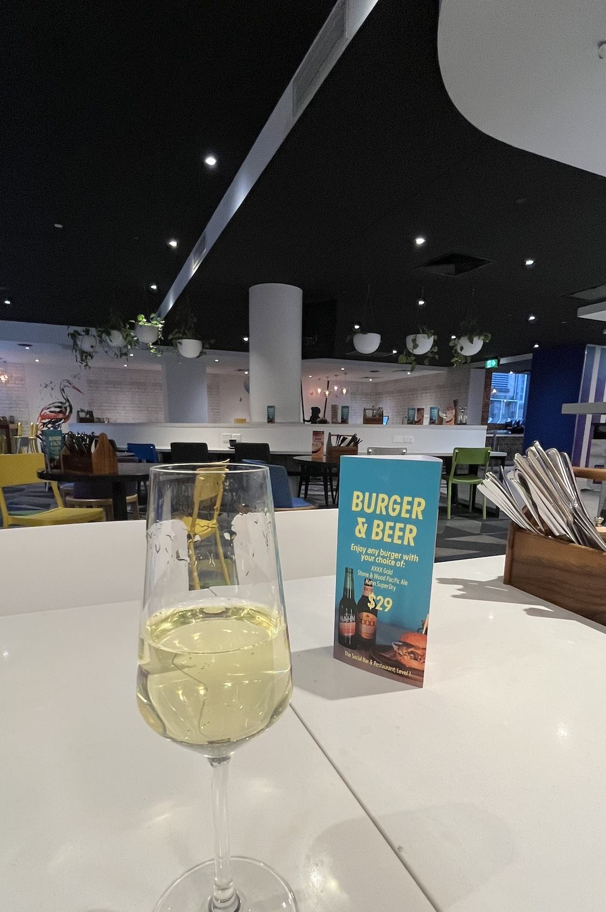
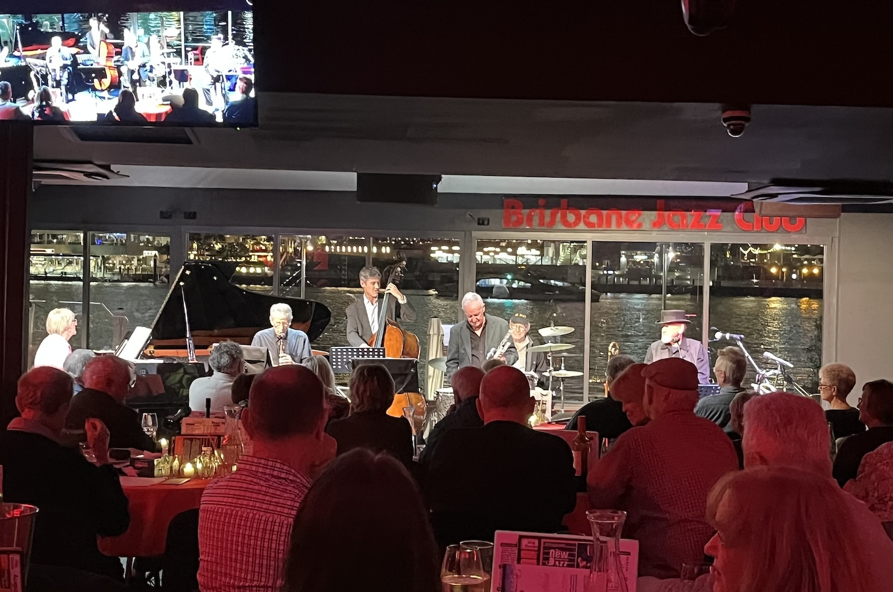
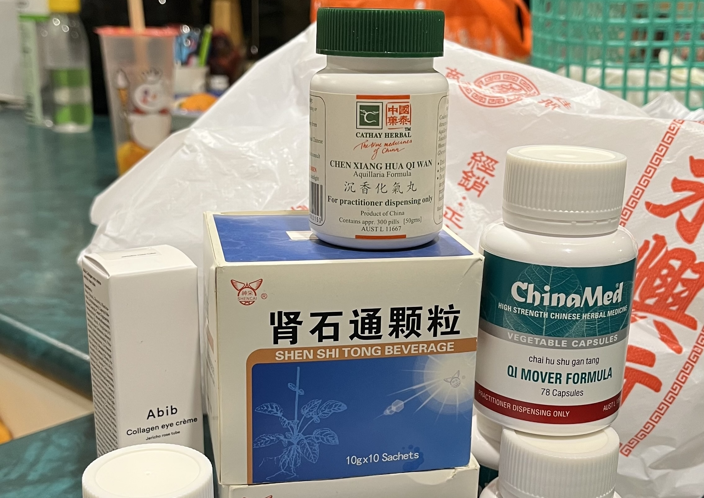
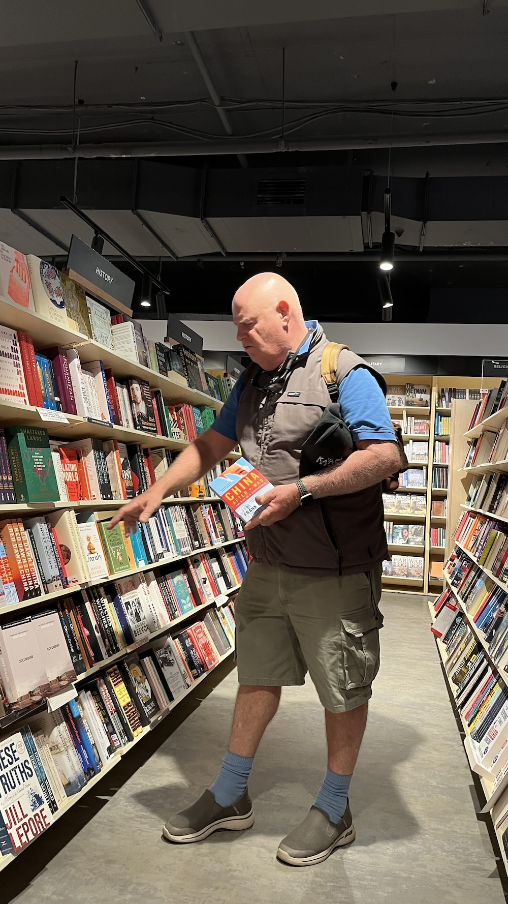
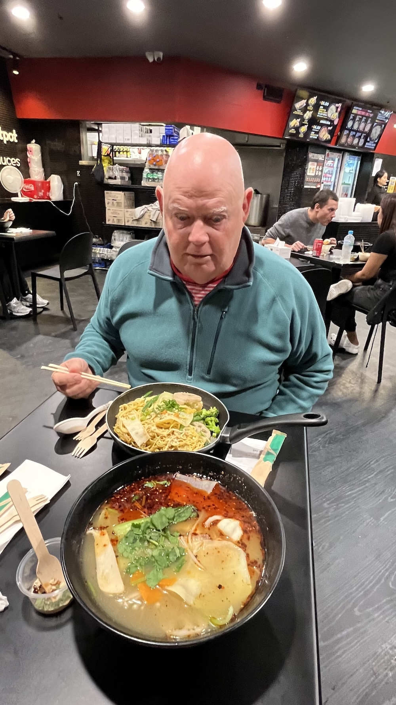
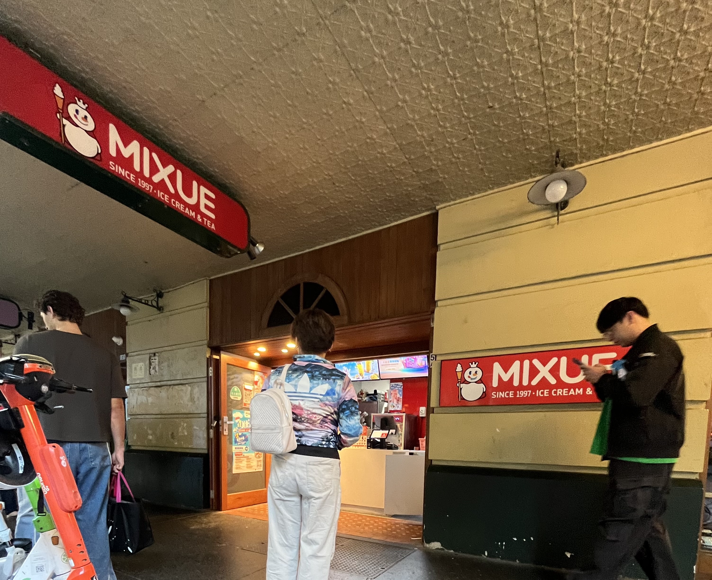
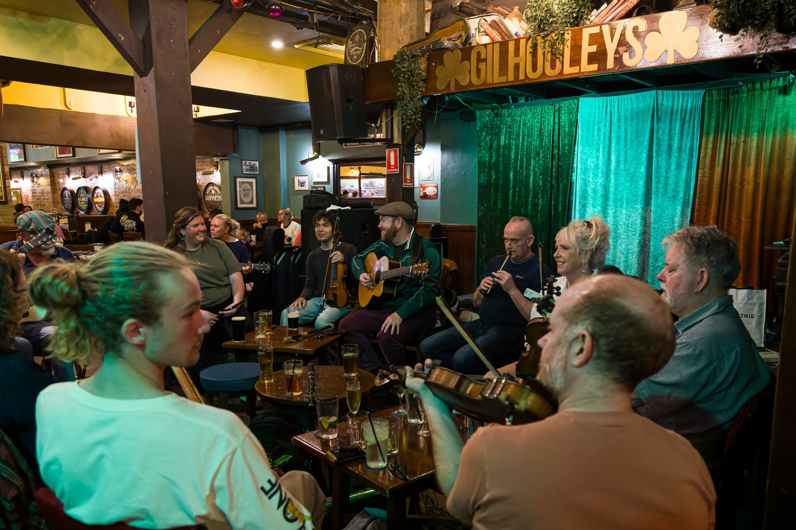

Weekly Dispatch
Week 2, Aug 2026
Day 1
Time to celebrate my husband's birthday — Brisbane, here we come! Perfect timing too: as an aged care worker, I'm required to complete a mountain of compulsory workplace training modules — thirty-one of them, to be exact. After weeks of grinding through them, I'd finally cleared the lot, so really, this trip had two reasons to happen.
Halfway there, the car started shuddering, then flat-out rattling. A tyre? A fan belt? Whatever it was, it rattled our confidence too — along with our excitement for the evening. Still, we made it through the maze of tunnels downtown and into the car park in one piece. Check-in took forever, which explained itself once we realised there was a big AFL game on in the city that night. We finally got settled into the room, and one welcome drink later, the tension melted away. We tucked into a takeaway Californian veggie salad (aka "hippie food") and an Indian cheese curry, watched the sunset, and dozed off for a bit.

Brisbane Jazz Club
We hopped in a rideshare, glided past the Story Bridge Hotel, slipped around Kangaroo Point, and finally pulled up at the Brisbane Jazz Club.
The place was already packed. Before we were shown to our table, we snuck a peek at the city skyline from the deck jutting out over the river. On stage, the Caxton Street Jazz Band — forty years running in that same spot — kicked things off Dixieland-style before easing into something more intricate, then downright bluesy, like something out of the 1930s or 40s. The arancini was excellent, and the chocolate cake with raspberries and ice cream was lethal enough to leave us puffy-eyed the next morning. Naturally, we had to cap it off with a good bourbon — sadly, the Australian rye we wanted wasn't on the menu that night.

It was an intimate room — maybe 50 to 100 seats (our table number was 51, so it must have been at least a hundred) — and watching the band with boats gliding by on the river and the skyline glittering behind them was hard to put into words. Though I couldn't help comparing it to how brightly lit Chinese cities are these days. The seat next to us was taken by a young Korean chef — funny how the only two Koreans in that whole room ended up side by side. We caught the ferry back across, cut through downtown, and were back at the hotel in no time. A perfect end to an evening at the jazz club we'd wanted to visit for so long.
Day 2
We'd recently levelled up our membership, which now gets us 30% off dining. I'd been looking forward to putting breakfast on the room tab, but the system kept glitching. Sorting it out was a headache, but one bite of that spread of fresh, varied food and it was worth the hassle 👍 Word must be getting around, because the place was packed. Maybe I shouldn't recommend it anymore 😂
While I got my hair done at a salon in the Valley, my husband wandered off and spotted a Chinese herbal medicine shop — he figured he'd check whether they had the same pills that worked so well for him in China. The elderly herbalist turned out to be so charming and chatty that he walked out not just with the kidney stone remedy, but also something for an autoimmune issue he'd only recently discovered. The herbalist even threw in a bonus tip: apparently dancing after taking the medicine helps the stones pass faster 😂
A short walk up from the Valley's main strip, there's an outdoor lift down to HSW Wharf. Being a weekend with winter sun on offer, the place was buzzing. We scanned a QR code to order, and a fragrant craft beer showed up in no time.

Day 3
On our last day, we could leave the car parked all day, so we wandered the city at an easy pace. A round of K-beauty shopping, then a coffee in the sun at Queen Street Mall. And of course, a browse through the bookshop my husband can never resist — this time he spent ages in the China section.
Upstairs, we found a Hyatt hotel café on the second floor — different from the flagship Dymocks in Sydney, where the café sits on a gallery level inside the bookstore. We'd been eyeing that rooftop café across the street from our hotel's top-floor city-view room for two days, and finally got to check it out in person.
With a rattly car and a long drive home ahead of us, we figured we'd grab a bubble tea for the road before setting off. Naturally, in the rush, I dropped it. We had no choice but to go back and order the same one again — and they just remade it for us, free of charge. #serviceGoals

Most people hear "the Valley" and picture somewhere gritty, a bit sketchy — the kind of place you're told to be careful in. But once we actually went, we found hidden gems tucked away everywhere. As my husband put it: "It looks rough on the outside, but chip away a bit and you find something that sparkles."
We stumbled on a tiny café down a back alley — so packed we could barely order — where a pandan latte caught my eye. Pandan's a leaf commonly used in Asian desserts, and thankfully the drink wasn't fluorescent green 😆 On one side was a Music Nook stacked with Japanese jazz records; on the other, a Thai kitchen. My husband got handed the bathroom key, which had a frying pan attached to it (not that we were cooking in there 😆). The young Thai owner — an audiophile who apparently learned jazz guitar as a kid — invited me to join him for a mukbang sometime 🤤

My husband's always been the type to scoff, "What could that possibly do?" — but not this time. He got proper consultation from a local pharmacist in Chengdu, Sichuan, and the herbal remedy for his kidney stones actually worked. Would you believe me if I said I finally caught, for the first time in years, a look on his face that said "okay, fine, I'll give it that"?
The recent China trip keeps popping back into my head, so we polished off a bowl of malatang and did a round of Korean cosmetics shopping too. He grabbed a random travel-size product off the shelf, which turned out to be a hair product. My husband is bald, in case that wasn't already clear 😂.

Walking back to the hotel one night, we passed an Irish pub right next door and got pulled in by the music. A small taste of the "craic culture" our son's been obsessed with lately. We went back the next day for lunch at the same pub. Wouldn't you know it — the moment we ordered, our son texted to say he was at a different Irish pub downtown. We wolfed down our food and went to find him, and there he was, jamming with a group of fiddlers at Gilhooley's. An accidental pub crawl, as it turned out.

Maybe it's time to start dreaming about an Ireland trip with our son? Now that we've wrapped up all 31 compulsory training modules for work, that's officially next on the list.